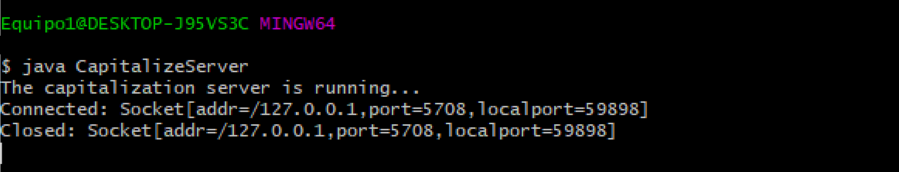
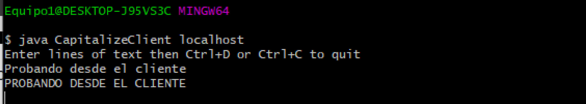

Programación de aplicaciones con sockets
Ejemplo de uso de Sockets con Java
A continuación se presenta dos ejemplos básicos de uso de Sockets en el lenguaje Java.
Ejemplo 1
Este ejemplo consiste de una aplicación de consola dividida en cliente-servidor, la cual consiste de un servidor el cual escucha
por peticiones de clientes y devuelve la fecha actual y un cliente el cual se conecta al servidor para obtener la fecha actual.
Cabe destacar que este ejemplo básicamente es un servidor secuencial, lo que significa que únicamente puede atender una petición
a la vez, por lo que solo es un ejemplo básico del funcionamiento de Sockets y no un ejemplo de como códificar una verdadera aplicación
con Sockets.
Servidor
Como se puede apreciar en el código, la clase DateServer abre un canal de comunicación al crear una nueva instancia de ServerSocket
en el puerto local 59090. Posterior a crear dicha instancia, la clase entra en un bucle while infinito en el cual la clase
se dedíca a esperar peticiones mediante el método accept().
En este punto del código, el servidor únicamente ejecuta el código que se encuentra dentro del bloque try cuando recibe una
petición de un cliente. Cuando dicho evento ocurre, el servidor crea una instancia de PrintWriter pasando a su constructor el outputStream
del ServerSocket para poder escribir y enviar bytes a traves de PrintWritter. Posterior a la creación de la instancia
de PrintWritter el servidor hace uso del método println() para enviar al cliente que hizo la petición una cadena o string
la cual contiene los datos de la fecha actual.
import java.io.IOException;
import java.io.PrintWriter;
import java.net.ServerSocket;
import java.net.Socket;
import java.util.Date;
public class DateServer {
public static void main(String[] args) throws IOException {
try (ServerSocket listener = new ServerSocket(59090)) {
System.out.println("The date server is running...");
while (true) {
try (Socket socket = listener.accept()) {
PrintWriter out = new PrintWriter(socket.getOutputStream(), true);
out.println(new Date().toString());
}
}
}
}
}
Cliente
La clase DateClient recibe un argumento por consola, el cual es la dirección IP que tendra asignado el Socket.
Tras validar el ingreso del argumento por consola, se crea una nueva instancia de Socket asignando la dirección
IP pasada como argumento en la ejecución y un número de puerto, que es el mismo que el que el servidor esta usando
para escuchar peticiones.
De esta manera el Socket se conecta con el servidor y se crea una instancia de Scanner pasando
a su constructor el objeto devuelto por el método getInputStream() del Socket. Tras ello,
se hace uso del método nextLine() de Scanner para obtener e imprimir por consola la respuesta del servidor.
import java.util.Scanner;
import java.net.Socket;
import java.io.IOException;
public class DateClient {
public static void main(String[] args) throws IOException {
if (args.length != 1) {
System.err.println("Pass the server IP as the sole command line argument");
return;
}
Socket socket = new Socket(args[0], 59090);
Scanner in = new Scanner(socket.getInputStream());
System.out.println("Server response: " + in.nextLine());
}
}
Ejemplo 2
Este ejemplo es similar al ejemplo anterior, pero con la modificación de que en esta ocasión el cliente le envía datos al
servidor y el servidor procesa dichos datos y envía una respuesta. La aplicación consiste de una sencilla aplicación por consola
en la que el cliente solicita el ingreso de una cadena al usuario y tras ello, envía dicha cadena al servidor, el cual la procesa
y la convierta a letras mayúsculas, para posteriormente devolverlo al cliente que realizo la petición.
Cabe destacar que la principal diferencia de este ejemplo en comparación con el ejemplo 1 es que en esta ocasión se hace
uso de un servidor con hilos, el cual puede atender múltiples peticiones a la vez, por lo que esta forma de implementación de
un servidor con Sockets es más apropiada que la del ejemplo 1.
Servidor
Como se puede apreciar en el código, la clase CapitalizeServer abre un canal de comunicación con un ServerSocket en el puerto 59898 y posteriormente hace uso de la clase ExecutorService para crear un pool de 20 hilos el cual servira para facilitar la creación de hilos. Posterior a ello, se entra en un bucle while infinito en donde el servidor espera por peticiones de clientes. Cuando un cliente se conecta al puerto se hace uso del pool creado con anterioridad para crear un nuevo hilo de ejecución con la clase Capitalizer, la cual se encargara de atender la petición recibida de manera asíncrona. Entonces, cuando se recibe una petición se crea un nuevo hilo y se ejecuta el método run() de la clase Capitalizer, la cual hace uso de un Scanner para obtener los datos que el cliente envió y, tambien hace uso de un PrintWriter para enviar al cliente la cadena enviada convertida a UpperCase o letras mayúsculas.
import java.io.IOException;
import java.io.PrintWriter;
import java.net.ServerSocket;
import java.net.Socket;
import java.util.Scanner;
import java.util.concurrent.ExecutorService;
import java.util.concurrent.Executors;
public class CapitalizeServer {
public static void main(String[] args) throws Exception {
try (ServerSocket listener = new ServerSocket(59898)) {
System.out.println("The capitalization server is running...");
ExecutorService pool = Executors.newFixedThreadPool(20);
while (true) {
pool.execute(new Capitalizer(listener.accept()));
}
}
}
private static class Capitalizer implements Runnable {
private Socket socket;
Capitalizer(Socket socket) {
this.socket = socket;
}
@Override
public void run() {
System.out.println("Connected: " + socket);
try {
Scanner in = new Scanner(socket.getInputStream());
PrintWriter out = new PrintWriter(socket.getOutputStream(), true);
while (in.hasNextLine()) {
out.println(in.nextLine().toUpperCase());
}
} catch (Exception e) {
System.out.println("Error:" + socket);
} finally {
try {
socket.close();
} catch (IOException e) {
}
System.out.println("Closed: " + socket);
}
}
}
}
Cliente
Por el lado del cliente, al iniciar la aplicación primero se realiza una validación para asegurarse de que el usuario haya ingresado
un argumento, el cual es la dirección IP del Socket que puede ser localhost si se ejecuta la aplicación de manera local.
Posterior a ello, se crea un nuevo Socket el cual se conecta a la dirección IP ingresada por el usuario y a un puerto, el cual es
el puerto donde el servidor esta escuchando por peticiones. Tras crear la conexión entre el cliente y el servidor se procede a solicitar el ingreso de una
cadena o string al usuario la cual posteriormente es enviada al servidor por medio del método println() de una instancia de la clase
PrintWriter, la cual fue creada pasando a su constructor el valor devuelto por el método getOutputStream() del Socket.
Entonces, en el bucle while se itera los datos ingresados por el usuario y se envían al servidor para posteriormente imprimir la respuesta del servidor
por medio de una instancia de la clase Scanner a la cual se le paso por su constructor el valor devuelto por el método getInputStream()
del Socket.
import java.io.IOException;
import java.io.InputStreamReader;
import java.io.PrintWriter;
import java.net.Socket;
import java.util.Scanner;
public class CapitalizeClient {
public static void main(String[] args) throws Exception {
if (args.length != 1) {
System.err.println("Pass the server IP as the sole command line argument");
return;
}
try (Socket socket = new Socket(args[0], 59898)) {
System.out.println("Enter lines of text then Ctrl+D or Ctrl+C to quit");
Scanner scanner = new Scanner(System.in);
Scanner in = new Scanner(socket.getInputStream());
PrintWriter out = new PrintWriter(socket.getOutputStream(), true);
while (scanner.hasNextLine()) {
out.println(scanner.nextLine());
System.out.println(in.nextLine());
}
}
}
}
Ejecución
Este ejemplo, al igual que el Ejemplo 1 pueden ser ejecutados al compilar los dos archivos del Cliente y el Servidor correspondientes y posteriormente ejecutar en dos consolas distintas primero el Servidor y luego el Cliente.
 